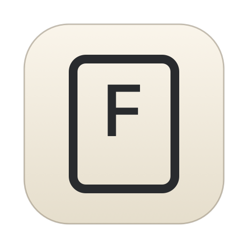
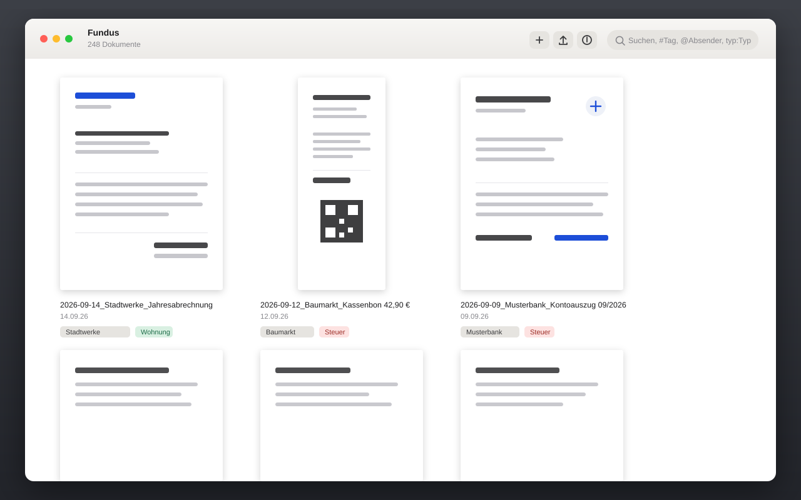
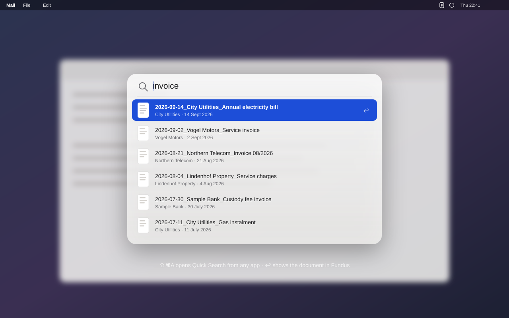
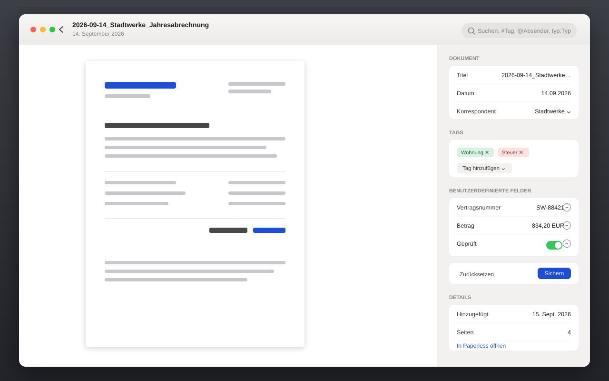

A native Mac client for Paperless-ngx. One window, your documents, a search that reaches you in every app — and it works behind an SSO gateway.
macOS 15 or newer · free and open source (MIT) · screenshots are mockups with made-up documents

A global shortcut opens Fundus' search over whatever you are working in.
⇧⌘A opens a floating panel above any app. ↩ opens the document in Fundus. The shortcut is yours to change.
It searches the local copy of your archive, so results appear while you type — even without a connection.
#tag, @correspondent, typ:type become tokens in the search field; the rest goes to Paperless' full-text index.
Every document is reported to Spotlight with title, text, tags and thumbnail. A hit opens it in Fundus.

Everything a freshly scanned document needs, in one column.
Title, date, correspondent, type and tags. ⌘S saves, ⌘↩ saves, removes the inbox tags and jumps to the next document.
Each field gets the control its type deserves: text, URL, number, amount with currency, date, yes/no, select list, document links.
If a Paperless workflow changes the document right after saving, Fundus reloads it and says so instead of showing you a stale state.
Drop files on the window or press ⌘O; the Paperless task is tracked to the end. Drag a document out and you get the original file.

It closes the windows and hides the Dock icon. Fundus keeps watching for new documents and comes back from the menu bar.
A small launcher inside the bundle starts Fundus without a window, the way 1Password does it.
New documents arrive with a thumbnail; a click opens the document.
Titles, text and thumbnails of the whole archive stay on your Mac, plus the previews you opened recently.
Most Paperless clients stop at the gateway. Fundus doesn't.
| Plain Paperless | Sign in with user name and password; Fundus fetches an API token via /api/token/ and keeps only that, in the keychain. |
| Behind Pangolin & co. | A sign-in window carries you through the gateway, the session cookie is reused after a restart. |
| Passkeys | macOS blocks WebAuthn in embedded web views. Use "sign in with another device" (QR code) or a login code — there's a button for it. |
| Gentle on the gateway | No request storms while a session is expired, and never a DELETE — CrowdSec setups tend to dislike both. |
No dependencies, no Xcode — the Command Line Tools are enough.
Releases are built by GitHub Actions on a macOS runner and published with a checksum. Or build it locally:
git clone https://github.com/elcajon/fundus.git cd fundus ./test.sh ./build.sh open build/Fundus.app